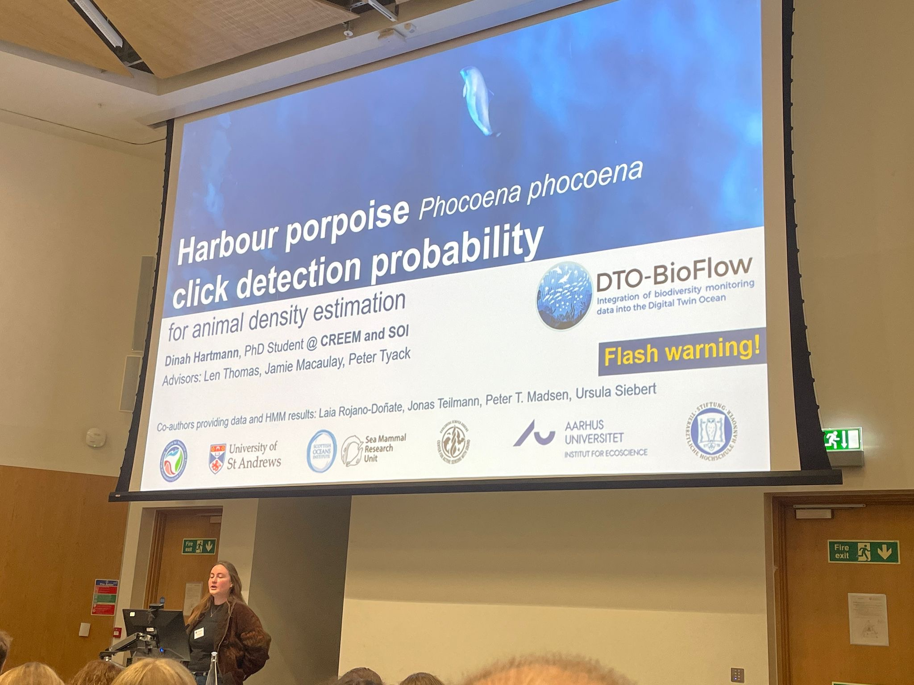

Presentations
Talks

The probability of detecting harbour porpoise echolocation clicks.
Hartmann, D., Macaulay, J. D. J., Tyack, P., Rojano-Doñate, L., Teglberg-Madsen, P.,
Teilmann, J., Siebert, U. & Thomas, L. (January 2026).
Aarhus University Ecoscience Group, Roskilde, Denmark.
The probability of detecting harbour porpoise echolocation clicks.
Hartmann, D., Macaulay, J. D. J., Tyack, P., Rojano-Doñate, L., Teglberg-Madsen, P.,
Teilmann, J., Siebert, U. & Thomas, L. (November 2025).
Marine Alliance for Science and Technology Scotland, Glasgow, Scotland.
The probability of detecting harbour porpoise echolocation clicks.
Hartmann, D., Macaulay, J. D. J., Tyack, P., Rojano-Doñate, L., Teglberg-Madsen, P.,
Teilmann, J., Siebert, U. & Thomas, L. (October 2025).
Scottish Oceans Institute, St Andrews, Scotland.
The probability of detecting harbour porpoise echolocation clicks.
Hartmann, D., Macaulay, J. D. J., Tyack, P., Rojano-Doñate, L., Teglberg-Madsen, P.,
Teilmann, J., Siebert, U. & Thomas, L. (September 2025).
Aarhus University Bioacoustics Group, Aarhus, Denmark.
Spatio-temporal distribution of harbour porpoises around Kullaberg nature reserve.
Hartmann, D., Stedt, J., & Carlsson, P. (March 2024).
Danish Marine Mammal Society Symposium, Denmark.
Posters
The probability of detecting harbour porpoise echolocation clicks.
Hartmann, D., Macaulay, J. D. J., Tyack, P., Rojano-Doñate, L., Teglberg-Madsen, P.,
Teilmann, J., Siebert, U. & Thomas, L. (September 2025).
International Bioacoustics Congress, Kerteminde, Denmark.
En route to standardisation: Porpoise monitoring using a programmed UAV.
Hartmann, D., Palmqvist, V. & Stedt, J. (May 2025).
European Cetacean Society 36th Conference, Ponta Delgada, Azores, Portugal.
Harbour porpoise click detection.
Hartmann, D., Macaulay, J. D. J., Tyack, P., & Thomas, L. (January 2025).
UK and Ireland Regional Student Chapter for Marine Mammalogy Student Conference,
St Andrews, Scotland.